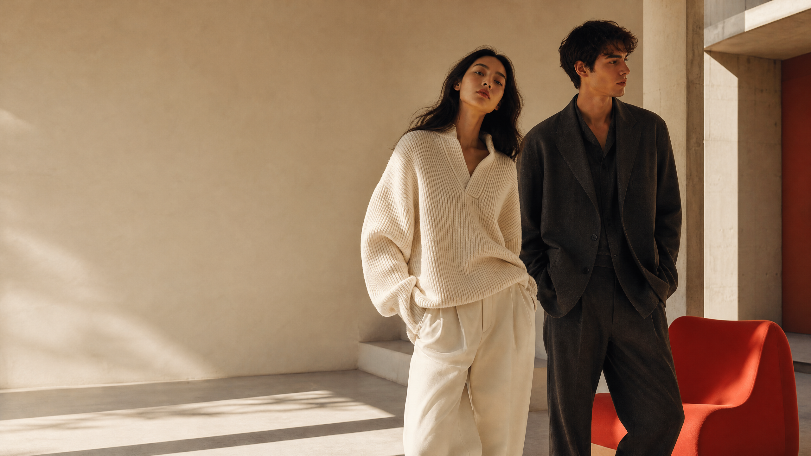
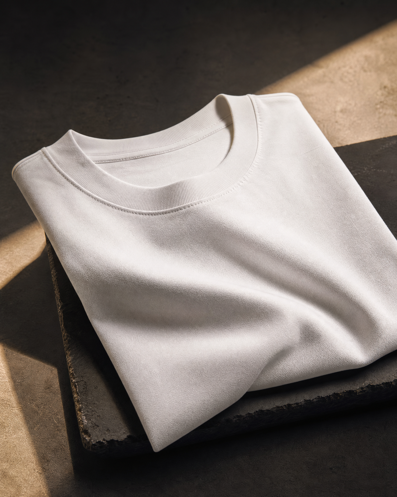

THE CLOTHUS STUDIO
A study in
texture.
Warm light, honest materials, and the quiet details that give a piece its point of view.

Good things
take time.
Our studio is a small room with big windows, a rail of samples, and a habit of looking twice. We work slowly enough to notice the difference between good and almost good.
That attention shows up in the soft weight of a tee, the way an overshirt falls, and the patina that arrives after a hundred wears.

Soft structureTHE DETAILS
Quietly
specific.
Texture is a language. We use it to make familiar shapes feel personal.